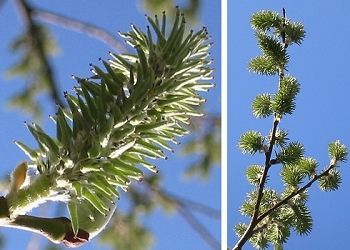
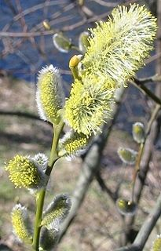

|
| Die Salweide blüht im März und April.
Weibliche und männliche Blüten stehen auf getrennten Bäumen. Die Blütenstände heißen Kätzchen.
Die weiblichen Blüten sind grün.
 |  Die männlichen Blüten sind silbrig behaart. Sie haben lange gelbe Staubblätter.
|